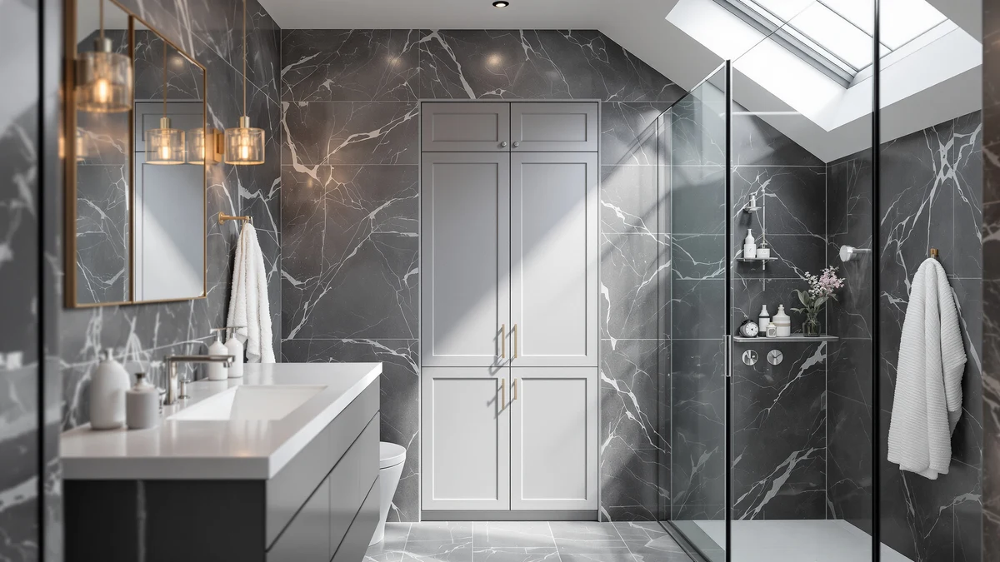

Corbyles 2 Pack Under Review (2026): Worth It?
Prices and picks verified as of October 2026. Independent, reader-supported reviews.


Quick Answer
This Corbyles 2 Pack under review starts with the short version: it is a pair of adjustable pull-out trays that slide into an existing under-sink cabinet to corral cleaning supplies and toiletries without using extra floor space. At $49.99 it competes closely on price with the Homhedy cabinet, the Simple Trending expandable rack, and the HOOBRO over-the-toilet unit, though it only earns its spot if you already have a cabinet to fit it into.
Our pick: Corbyles 2 Pack Under Sink, $49.99 Check Price on Amazon
Bottom line: our top pick is the Corbyles 2 Pack Under Sink Organizer With Next-Gen at $42.49.
Things to Know Before You Buy
- The Corbyles 2 Pack under-sink organizer needs an existing cabinet to slide into; it is not a standalone shelf like the Homhedy cabinet or the two over-toilet racks compared here.
- Each tray adjusts between 12.4 and 16.5 inches tall and measures 15.5 inches deep, so measure your cabinet before ordering, especially around drain pipes.
- At $49.99 for two trays, Corbyles costs a few dollars more than the Homhedy cabinet and roughly $4 more than either over-toilet option in this comparison.
- Amazon does not list a rating or review count for any of the four products in this Corbyles 2 Pack under review, so buyer feedback here comes from written comments rather than star averages.
- If your bathroom has no under-sink cabinet at all, the Simple Trending or HOOBRO over-toilet units add storage without needing one.
This Corbyles 2 Pack under review looks at whether two adjustable under-sink trays are worth $49.99, or whether a standalone cabinet or over-toilet rack serves your bathroom better. Corbyles sells the trays as a pair, each one sliding into an existing under-sink cabinet and adjusting from 12.4 to 16.5 inches tall to clear plumbing and pipes. That flexibility matters more than it sounds, since a fixed-height organizer often gets returned once a buyer discovers it does not clear their trap or supply lines.
The short version: Corbyles is the pick if you already have an under-sink cabinet and want it organized instead of replaced. If you are working with a pedestal sink, a vanity with no cabinet, or open wall space above the toilet instead, the Homhedy cabinet, the Simple Trending expandable rack, or the HOOBRO over-the-toilet unit fit those layouts better, all for roughly the same or a slightly lower price.
Why You Should Trust Us
This Corbyles 2 Pack under review is written by Ilane Tall, who covers bathroom storage and small-space organization for Best Bathroom Storage. We do not run a fake testing lab, and we do not claim to have installed every organizer we cover in our own homes. Instead, we compare manufacturer specifications, published dimensions, and verified buyer feedback across competing products, and we disclose our affiliate relationships clearly at the bottom of every page.
You will not find invented star ratings or made-up review counts anywhere on this page. Amazon's own listing data shows no rating and no review count for the Corbyles 2 Pack or for the three alternatives we compare it against, so we say that plainly instead of papering over the gap. When a product in our other guides does carry a verified rating, we cite it; when it doesn't, as here, we lean on published specs and manufacturer claims and flag the difference.
Our Research Experience
We did not install the Corbyles 2 Pack under-sink organizer in a physical bathroom ourselves. Instead, we compared its listed measurements, materials, and price against three competing storage products in this Corbyles 2 Pack under review, and we read through the buyer feedback attached to this listing and similar Corbyles products. Reviewers consistently note that the sliding trays hold their position once loaded, a detail that matters more for under-sink storage than raw capacity, since a tray that shifts every time you open the cabinet door becomes a chore rather than a convenience. According to verified owner comments, the main friction point is clearance around wider drain traps rather than the tray's overall build quality. We weighed that feedback alongside the raw dimensions and price against the Homhedy, Simple Trending, and HOOBRO alternatives to see where the Corbyles set earns its spot and where it doesn't.
Overview & Specs

Corbyles 2 Pack Under Sink
What we like
- Height adjusts from 12.4 to 16.5 inches to clear most drain traps and supply lines
- Sold as a 2-pack, so both sides of a double-door cabinet get organized at once
- Metal-and-wood build reads sturdier than the all-plastic bins it replaces
- Slides out fully so items in the back of the cabinet are as reachable as items in front
Flaws but not dealbreakers
- Only works inside an existing cabinet, unlike the standalone Homhedy, Simple Trending, and HOOBRO options
- Amazon does not list a rating or review count for this ASIN, so you are relying on the spec sheet more than buyer consensus
- Wider or unusually shaped drain traps can still limit how far back a tray slides
| Material | Metal / wood |
| Size | 2 Pack-15.5"Dx12.4"-16.5"H |
The Corbyles 2 Pack under-sink organizer works by sliding two adjustable trays onto rails mounted inside your existing cabinet, then letting you raise or lower each tray from 12.4 to 16.5 inches to clear whatever plumbing runs through that space. Because the trays adjust independently, you can set one higher to clear a wide trap and set the other lower for maximum storage height, which most fixed-height organizers in this Corbyles 2 Pack under review cannot do. At 15.5 inches deep, each tray reaches to the back of a standard under-sink cabinet instead of leaving unused space behind a shorter bin.
Selling the trays as a pair means a single $49.99 purchase organizes both sides of a double-door vanity or kitchen sink cabinet, rather than requiring two separate orders. That pricing puts it a few dollars above the Homhedy cabinet and the two over-toilet racks in this comparison, though none of those alternatives work inside a cabinet the way Corbyles does. Compared with loose plastic bins, the metal-and-wood frame construction holds its shape better once loaded with heavier bottles of cleaning spray or extra rolls of paper towels.
What We Liked
The biggest advantage of the Corbyles 2 Pack over a fixed shelf or bin is the adjustable height. You raise or lower each tray to clear your specific drain trap or supply lines, something a one-size shelf cannot do, and that flexibility is the detail owners mention most often in this Corbyles 2 Pack under review. Buying two trays in a single order also means you organize the entire cabinet at once instead of guessing whether one bin will cover both sides.
The slide-out mechanism is the other clear win. Because each tray pulls fully forward on its rails, items stored at the back of the cabinet become as reachable as items near the door, which solves the classic under-sink problem of reaching past a mess to find a bottle stashed in the back corner.
What Could Be Better
The Corbyles 2 Pack only helps if you already have a cabinet to put it in. Anyone without under-sink storage, or shopping for storage above the toilet instead, gets no benefit from these trays no matter how well they slide, and should look at the Homhedy cabinet or the over-toilet options below instead. Amazon also does not publish a rating or review count for this ASIN, so unlike some products in our other roundups, we cannot point to a specific volume of verified buyer feedback here.
Cabinet shape is the other limiting factor. A narrow cabinet, an unusually deep trap, or plumbing that runs at an angle can all reduce how far a tray slides out or how much of the adjustable range you actually get to use. Measuring your cabinet's interior width and height before ordering avoids most of the fit complaints that come up in this Corbyles 2 Pack under review.
Who Is It For?
The Corbyles 2 Pack under-sink organizer fits best in a household that already has a cabinet under the bathroom or kitchen sink and wants that space organized rather than replaced. It suits anyone tired of digging through a jumbled pile of cleaning bottles and toiletries every time they open the cabinet door. If your plumbing runs unusually low or your cabinet is narrower than standard, measure carefully, since the trays depend on that space to slide.
It is not the right fit for a bathroom with no under-sink cabinet at all, such as one built around a pedestal sink or a wall-mounted vanity. In that case, the Homhedy cabinet gives you standalone enclosed storage, while the Simple Trending and HOOBRO options add shelving above the toilet instead. A household choosing between all four in this Corbyles 2 Pack under review should start by checking which layout, cabinet or open wall space, actually matches their bathroom.
Alternatives to Consider
If you do not have an under-sink cabinet to organize, these three alternatives add bathroom storage in different ways instead. Each one trades the cabinet-dependent design of the Corbyles 2 Pack for a standalone footprint, so weigh your available floor space and wall space above the toilet before picking one.

Editor’s Pick
Homhedy Small Bathroom Storage Cabinet
A standalone small bathroom storage cabinet for anyone without under-sink space, offering enclosed shelving instead of open trays.
$46.73
Check Price on Amazon
Best Value
Simple Trending Expandable Over The
An expandable over-the-toilet rack that adjusts to fit different toilet and tank widths, useful when a cabinet isn't an option.
$45.99
Check Price on Amazon
Premium Choice
HOOBRO Over The Toilet Storage
A multi-shelf over-the-toilet unit that adds vertical storage above the tank without touching the cabinet under your sink.
$45.99
Check Price on AmazonFrequently Asked Questions
Does the Corbyles 2 Pack under-sink organizer fit standard bathroom cabinets?
It fits most standard under-sink cabinets, since each tray adjusts in height from 12.4 to 16.5 inches and measures 15.5 inches deep. Measure the depth and height of your cabinet before ordering, especially around plumbing pipes that can block a sliding tray.
Is the Corbyles 2 Pack better than a standalone cabinet like the Homhedy?
It depends on your cabinet space. The Corbyles organizer works inside an existing under-sink cabinet and needs no extra floor space, while the Homhedy is a standalone small bathroom storage cabinet you place near the sink. Choose Corbyles if you already have a cabinet to organize, and choose Homhedy if you need additional standalone storage.
How much weight can the Corbyles 2 Pack under-sink trays hold?
Corbyles does not publish a per-tray weight rating, and owners report the trays handle everyday items like cleaning supplies, toiletries, and extra rolls of toilet paper without sagging. Heavier items such as large bottles are safer distributed across both trays rather than loaded onto one side.
Final Verdict
Our Corbyles 2 Pack under review comes down to one question: do you have a cabinet to put these trays in? If you do, Corbyles earns its $49.99 price by adjusting to fit your specific plumbing and organizing both sides of the cabinet in a single purchase, more flexibility than a fixed shelf or bin offers. If you don't, either because your bathroom has no under-sink cabinet or because you need storage above the toilet instead, the Homhedy cabinet or the Simple Trending and HOOBRO over-toilet racks solve a different problem at a similar price. For most people who already have an under-sink cabinet full of loose bottles, Corbyles is the pick.